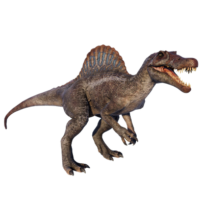

Useful Website
Spinosaurus is a genus of carnivorous dinosaur native to North Africa, and lived around 95m years ago during the Late Cretaceous period. Its name translates to ‘spine lizard’, in reference to the long spines on its back vertebrae that form a sail, which researchers believe helps Spinosaurus to regulate its temperature. At around 18m in length and up to four tonnes in weight, Spinosaurus is one of the largest meat-eating dinosaurs to have existed.
